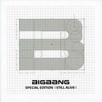

Photo by BIGBANG_Extraordinary_20's on Flickr.com.
Big Bang, a South Korean band, was formed by entertainment agency YG Entertainment. Their sound and aesthetic is heavily influenced by western hip hop, but they also incorporate EDM and rock. The group consists of five members: G-Dragon, T.O.P, Taeyang, Daesung and Seungri. The group debuted in 2006 and receieved a lukewarm reception. It wasn't until their hit song "Lies" that they shot to the top of the Korean music charts. Today they are cited as one of the most influential groups to shape Kpop as it is today. With a record number of 18 number one songs, the group has sold over 140 million records, which ranks them as one of the biggest-selling boy bands in the world.
